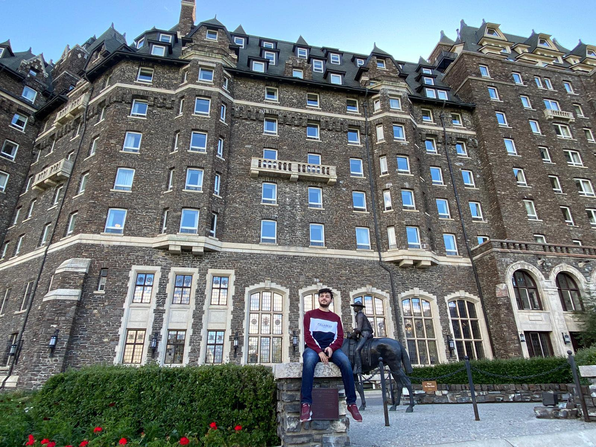

A Little More About Myself

Going a little more in depth about myself, I'm a Lebanese Student who grew up in Kuwait up until the age of 17. 5 months before graduating I had to do some research on what I want to pursue as a degree. I realized that I had a passion working with computers. I enjoyed coding as well and I did create some small mods in some games such as minecraft where I also created plugins for minecraft as well. That's when I thought that taking Communications Engineering at Carleton was a great idea. 4 years later, I realized I had more interest in creating games and/or websites and so that's why I chose to take the current degree that I'm in which is Game Development.
In both of the degrees that I've taken so far I've gained a lot of experience with different programming languages. Here's a List of all of the programming languages I have worked on for 3+ years, followed by a list of programming languages I'm currently adding to my skillset.
• C++
• C#
• C
• Python
• Java
• Matlab
• Assembly Language
• Ruby
• HTML
• CSS
• SQL
If you got this far, wow. You must really want to know more about me. Well then! Some of my hobbies include, Skiing, Ice Skating, Roller Blading, Gaming, Golfing, Trying out new restaurants (yes.. I consider that a hobby), and much more! In my free time I love cooking and baking, especially after a long day of coding. It's a nice way to take a step back and relax, usually also helps me find a different angle on a project I might be stuck on. My favourite season is Spring and I love going out when there isn't 2 meters of snow waiting for me on the other side. I also love leading projects and tackling tasks on my own, but if I struggle I'm not embarassed to ask for help!